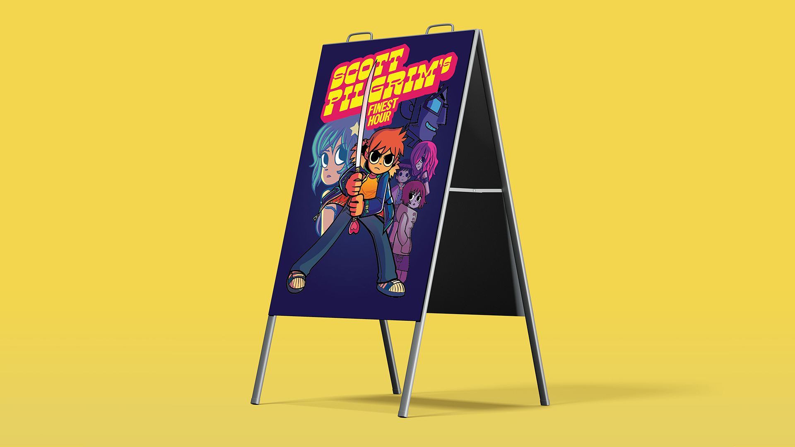

My Projects

Traced Cartoon Character
The goal for this project was to recreate a poster of our favourite cartoon characters. Our objective was to demonstrate the use of the pen tool and creating basic shapes within Illustrator to recreate and form cartoon characters of our choice.
Charleys Philly
Steaks Mockup Menu
The goal of this project was to demonstrate our design knowledge and skills with Adobe InDesign by re-branding and creating a menu of an existing restaurant. In this case, I decided to create a menu for the fast food chain, Charleys Philly Steaks.

Photography Final Composition
The goal for this project was to demonstrate the use of a digital camera, as well as planning and organizing the photoshoot, gathering equipment, props and models. Practicing professionalism was an important aspect to this project.